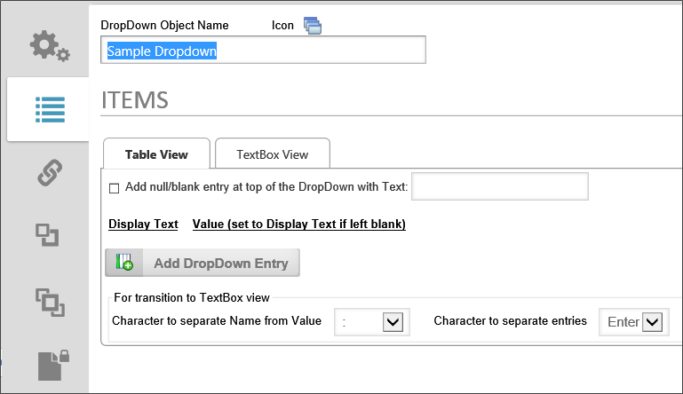
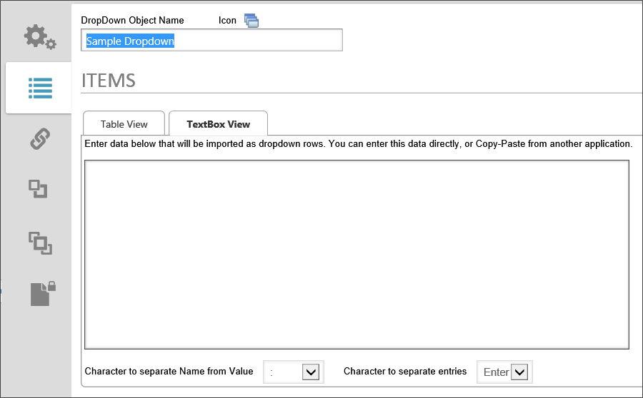

This object enables you to create content for a dropdown on your Form. This will automatically populate a dropdown control with the data you create. You can create a Dropdown List Content Object by selecting DropDown Object from the Create New... menu dropdown. Enter a name for the object and click the OK button to open the new object definition.

Click on the Add DropDown Entry button to add items to the dropdown list. Enter a Name and optional Value for each item.
Additionally you can manually enter date into your dropdown list as rows in the TextBox View tab. You can enter this data directly into the text box or Copy-Paste from another application.

Click here to use the Simulator to create a new DropDown Object and Link it to a Dropdown control on a form.